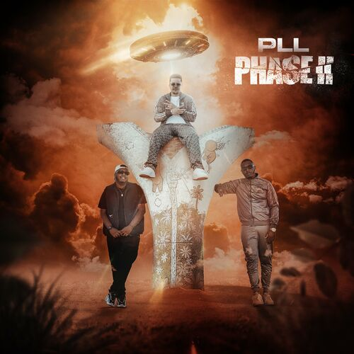

Trio de talentueux artistes originaires du sud de La Réunion à
Saint-Louis, unis en 2014 pour former le groupe P.L.L , abréviation de «
Power Love Life » symbolisant la puissance de l’amour dans la vie.
Ils s'imposent comme un véritable phénomène musical. Leur morceau
"Shattiment" affiche 15 millions d'écoutes en streaming et leur single
"Maya", inspiré du célèbre dessin animé Maya l'Abeille, fait un carton sur
TikTok, où des milliers d'internautes reprennent la chorégraphie. Ce
succès, ils le doivent en partie à DJ Sebb , producteur emblématique de La
Réunion, qui les repère en 2016 sur YouTube. Il les aide à se
professionnaliser et à affiner leur identité musicale. Leur musique puise
dans les sonorités antillaises, réunionnaises et urbaines, reflétant la
richesse culturelle de leur île.